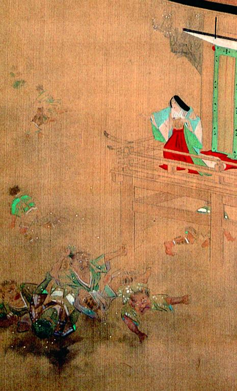

← 图鉴索引

寺社の舞台から、女が豆を撒いている。下にいる裃を着た6体の鬼たちは逃げ惑っている。
出典：親書誌：A5_pushkin_0067：（節分会図；セツブンエズ）／日付：2011／資源識別子：A5_pushkin_0067_0001_0000
Copyright (c)2010- International Research Center for Japanese Studies, Kyoto, Japan. All rights reserved.